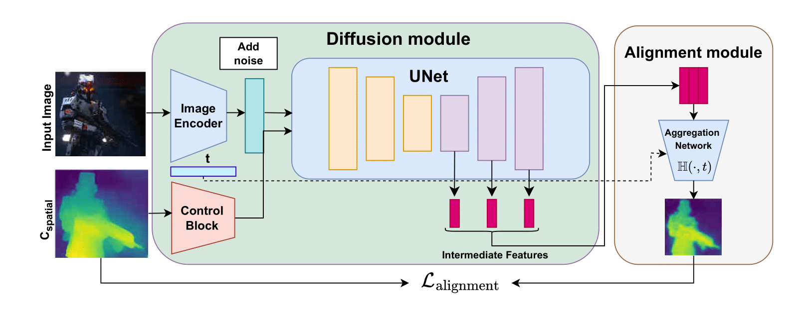
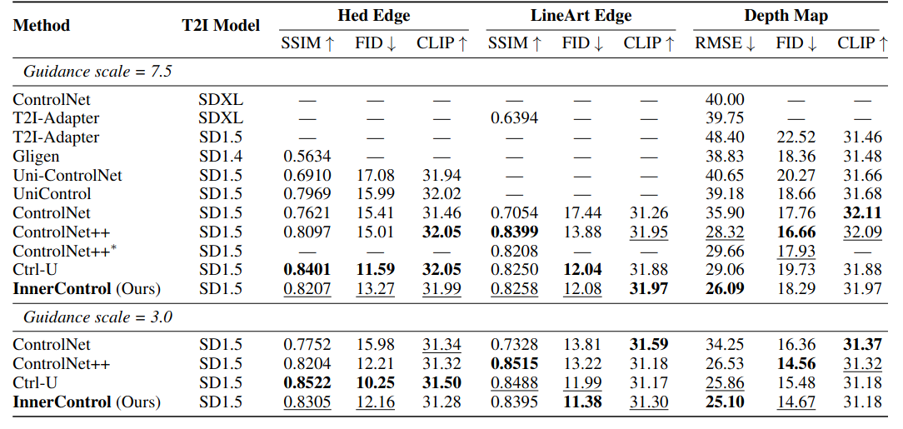

Motivation

Abstract
Despite significant progress in text-to-image diffusion models, achieving precise spatial control over generated outputs remains challenging. One of the popular approaches for this task is ControlNet, which introduces an auxiliary conditioning module into the architecture. To improve alignment of the generated image and control, ControlNet++ proposes a cycle consistency loss to refine correspondence between controls and outputs, but restricts its application to the final denoising steps, while the main structure is introduced at an early generation stage. To address this issue, we suggest InnerControl — a training strategy that enforces spatial consistency across all diffusion steps. Specifically, we train lightweight control prediction probes — small convolutional networks — to reconstruct input control signals (e.g., edges, depth) from intermediate UNet features at every denoising step. We prove the efficiency of such models to extract signals even from very noisy latents and utilize these models to generate pseudo ground truth controls during training. The suggested approach enables an alignment loss that minimizes the difference between predicted and target condition throughout the whole diffusion process. Our experiments demonstrate that our method improves control alignment and fidelity of generation. By integrating this loss with established training techniques (e.g., ControlNet++), we achieve high performance across different condition methods such as edge and depth conditions.
Pipeline overview
Pipeline overview. We schematically illustrate the main idea of our InnerControl framework, highlighting the integration of the alignment loss. The main difference from ControlNet++ is InnerControl, which processes intermediate features extracted from the UNet decoder. These features are passed through an aggregation network to predict spatial control signals (e.g., depth or edge maps), which are then compared to the input control $c_{spatial}$ to enforce consistency at every denoising step.
Quantitative Results
Controllability and Generation Quality.
Unified comparison on the MultiGen‑20M benchmark. Controllability is measured by SSIM (↑) for HED/LineArt and RMSE(↓) for Depth; fidelity by FID (↓); relevance by CLIP‑score(↑). * – denotes training model from scratch using suggested in paper hyperparameters.
Qualitative Results
Qualitative Comparison with other methods

Visualization of difference between extracted signal from intermediate features and input control after our training applied (top) and for standard ControlNet (bottom)
More Visualization Results

Selected Control Type
BibTeX
If you find our work useful in your research, please consider citing:@article{zhang2024ctrl,
title={Ctrl-U: Robust Conditional Image Generation via Uncertainty-aware Reward Modeling},
author={Zhang, Guiyu and Gao, Huan-ang and Jiang, Zijian and Zhao, Hao and Zheng, Zhedong},
journal={arXiv preprint arXiv:2410.11236},
year={2024}
}